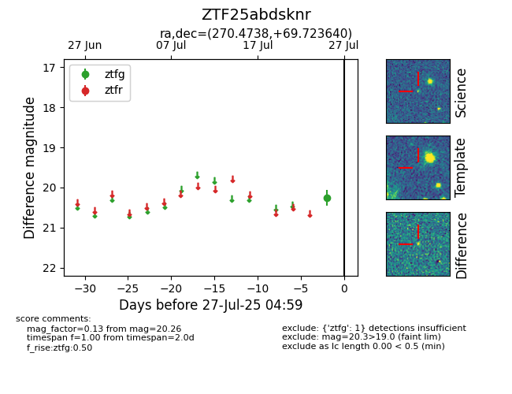

Target ZTF25abdsknr at 2025-07-27 04:59, see:
FINK: fink-portal.org/ZTF25abdsknr
Lasair: lasair-ztf.lsst.ac.uk/objects/ZTF25abdsknr
ALeRCE: alerce.online/object/ZTF25abdsknr
alt names
ZTF25abdsknr (ztf,fink)
coordinates:
equatorial (ra, dec) = (270.4738,+69.72364)
galactic (l, b) = (100.0227,+29.59603)
photometry
last ztfg=20.26
1 ztfg detections
